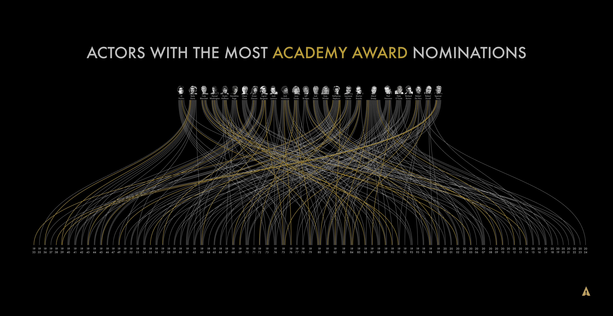
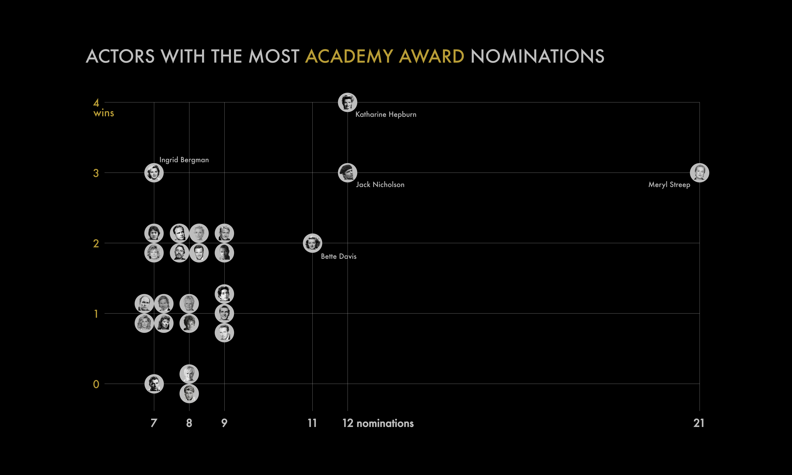

«And the Oscar goes to...» visualised
Information design approach to the most Academy Award nominated actors data.
So, back in the middle of the 2025 award season data analyst and information designer Anastasiya Kuznetsova came up with an idea of a cinema-inspired dataviz challenge. The objective was to suggest comprehensible and engaging ways to display the dataset of actors, who had been the most nominated and awarded in the 'best actor/actress' category by the Academy of Motion Picture Arts and Sciences. Below are my two takes on this challenge (quite humbled that they were selected as the top 10 best).
Version 1 (artsy)
Version 2 (practical)
